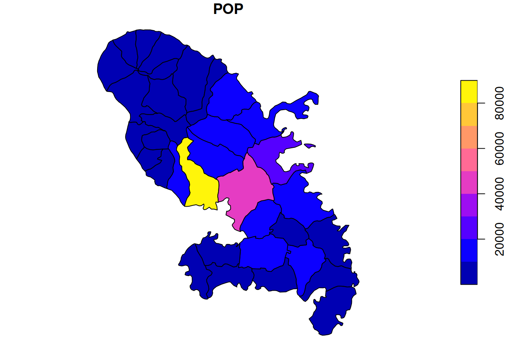
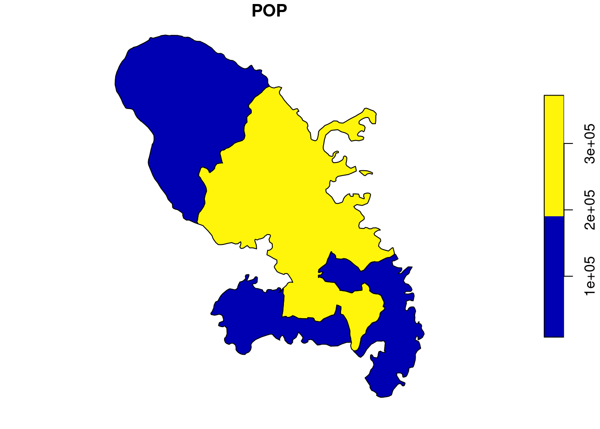

remotes::install_github("antuki/COGugaison")24 Manipuler des données spatiales
24.1 Tâches concernées et recommandations
L’utilisateur souhaite traiter avec R des données spatiales (données géolocalisées, polygones…). Si vous ne savez pas si cette fiche répond à votre besoin, les données spatiales sont définies dans le paragraphe Définition des données spatiales.
Tâche concernée et recommandation
-
Il est recommandé d’utiliser le package
sfqui couvre les principaux besoins (lecture des formats de données géographiques, traitements des données spatiales, représentations graphiques et cartographiques) ; -
Sauf cas particuliers, il est recommandé de ne pas utiliser le package
sp, qui est rendu obsolète parsf; - Selon le besoin exact, plusieurs autres packages proposent des fonctionnalités complémentaires (voir section Pour aller plus loin).
24.2 Définition des données spatiales
Le terme “données spatiales” désigne les données qui portent sur les caractéristiques géographiques des objets (localisation, contours, liens). Les caractéristiques géographiques des objets sont décrites à l’aide d’un système de coordonnées qui permettent une représentation dans un espace euclidien (\((x,y)\)). Le passage de l’espace réel (la Terre, qui est une sphère) à l’espace plan se fait grâce à un système de projection. Voici quelques exemples de données spatiales :
- Une table décrivant des bâtiments, avec les coordonnées géographiques de chaque bâtiment ;
- Le découpage communal du territoire, avec le contour du territoire de chaque commune ;
- Les routes terrestres, avec les coordonnées décrivant leur parcours.
Les données spatiales rassemblent classiquement deux types de données :
- des données géographiques (ou géométries) : objets géométriques tels que des points, des lignes, des polygones, ou des maillages (raster). Exemple : la forme de chaque commune, les coordonnées d’un bâtiment ;
- des données attributaires (ou attributs) : des mesures et des caractéristiques associés aux objets géométriques. Exemple : la population de chaque commune, le nombre de fenêtres et le nombre d’étages d’un bâtiment.
Les données spatiales sont fréquemment traitées à l’aide d’un système d’information géographique (SIG), c’est-à-dire un système d’information capable de stocker, d’organiser et de présenter des données alphanumériques spatialement référencées par des coordonnées dans un système de référence (CRS). R dispose de fonctionnalités lui permettant de réaliser les mêmes tâches qu’un SIG (traitement de données spatiales, représentations cartographiques).
Les systèmes de projection font l’objet de standards internationaux et sont souvent désignés par des codes dits codes EPSG . Ce site est un bon aide-mémoire. Les plus fréquents, pour les utilisateurs français, sont les suivants (plus d’infos ici) :
-
2154: système de projection Lambert 93. Il s’agit du système de projection officiel : la plupart des données diffusées par l’administration pour la métropole sont disponibles dans ce système de projection. -
4326: WGS 84 ou système de pseudo-Mercator. C’est le système de projection des données GPS. -
27572: Lambert II étendu. Il s’agit de l’ancien système de projection officiel. Les données spatiales anciennes peuvent être dans ce format.
24.4 Pour aller plus loin
Selon le besoin exact, plusieurs autres packages proposent des fonctionnalités complémentaires :
- le package
rasterpour gérer le format de données de type maillage ; - les packages pour l’analyse statistique spatiale :
-
spdeppour l’économétrie spatiale : relations de voisinage entre objets spatiaux, indices d’autocorrélation spatiale, … ; -
spatstatpour l’économétrie spatiale ; -
gstatetgeoRpour la géostatistique ;
-
-
btb(produit par l’Insee) pour du lissage ; - le package
rpostgispour interfacerRà une base de donnéesPostGIS.
24.5 Où trouver des données géographiques et des shapefiles ?
Il s’agit du domaine où la diffusion de données par l’open data a permis une grande diversité des sources disponibles. Certaines données sont disponibles sous forme de shapefiles, d’autres avec des identifiants géographiques comme le code commune à apparier à un shapefile proposant la même variable.
Les limites administratives de référence sont disponibles sur le site Admin Express de l’IGN (anciennement GeoFla).
Le code officiel géographique (COG), qui tient à jour les entités administratives (codes communes, régions, etc.) est disponible sur le site de l’Insee et via l’API Métadonnées. La fiche API indique comment accéder à des données via une API.
Tip
Contrairement à ce qui pourrait être pensé, la géographie et le COG sont régulièrement modifiés, pour prendre notamment en compte des fusions et scissions de communes. Deux ensembles apparemment identiques de codes communes au 1er janvier 2022 et 1er janvier 2021 peuvent ainsi différer, et il convient de retraiter ses données pour s’assurer qu’elles sont toutes définies dans une même géographie.
Le package COGugaison fournit un ensemble d’outils répondant à ce besoin. Il permet de réaliser de nombreuses modifications utiles au chargé d’études (remplacement des codes arrondissements dans Paris, Lyon, Marseille, identification du millésime géographique des données, visualisation des changements de géographie, transformation d’un millésime à un autre pour les communes, les zonages standards d’études de l’Insee, et les zonages à façon, etc.) sans avoir à mobiliser le COG.
Note
Ce package n’étant pas disponible sur le CRAN, dans un environnement connecté à internet, il est nécessaire de l’installer depuis Github:
Spécificité Insee
Ce package n’est pas disponible sur le CRAN. Sur AUS, on peut l’installer avec la commande install.packages("COGugaison", repos = "https://nexus.insee.fr/repository/r-public").
Il est également possible de trouver des données géographiques sur data.gouv, insee.fr ou sur d’autres ressources d’open data, qu’ils soient génériques comme opendatasoft ou plus institutionnels comme opendata.paris.fr/
Spécificité Insee
L’Insee propose un outil pour sélectionner et télécharger des données géographiques via l’application creacartes.
24.6 Pour en savoir plus
- la documentation du package
sf:- le site officiel du package ;
- la documentation du package ;
- la cheatsheet du package (en anglais) ;
- un tutoriel détaillé sur les données spatiales et sur la cartographie avec
R(en français).
24.3 Comment utiliser le package
sfLe package
sfest une boîte à outils conçue pour faciliter la manipulation de données spatiales. La grande force desfest qu’il permet de manipuler des données spatiales comme s’il s’agissait de données traditionnelles, car il repose sur le standard ISO 19125 simple feature access défini conjointement par l’Open Geospatial Consortium (OGC) et l’International Organization for Standardization (ISO). Cette fiche illustre l’usage desfavec le jeu de donnéesmartiniquedu packagecartography.Les fonctions de
sfsont pour la plupart préfixées parst_(Spatial Type) et permettent notamment de :Le package
sfintroduit un objet géographique particulier : la table de données spatiale appeléesf. Unsfest simplement une table de donnéesRtraditionnelle (undata.frame), enrichie d’une colonne supplémentairegeometryqui contient l’information géographique. Par conséquent, toutes les fonctions qui s’appliquent à undata.frames’appliquent exactement de la même façon aux attributs des objetssf.Le package
sfest une extension du packagedplyrpour les objets géographiques. On peut donc utiliser le pipe (%>%) pour chaîner des opérations avecsf, ce qui est souvent pratique (voir la fiche Manipuler des données avec le tidyverse).24.3.1 Créer une table de données spatiales
Créer une table de données spatiales avec
sfest très simple. Il y a deux méthodes, selon que les données spatiales sont directement disponibles dans un format de données géographiques (par un exemple un fichiershapefile) ou dans un fichier de données tabulées (par exemple un fichier.csv).24.3.1.1 Importer des fichiers de données géographiques
La fonction
sf::st_read()permet de lire différents formats de données géographiques. Les paramètres attendus par la fonction sont :dsn, le nom de la source de donnée (nom du fichier ou chemin vers le répertoire contenant les données géographiques). Le format le plus commun est le.shpmaissfpeut lire d’autres formats (.map,.geojson…) ;layer, le nom de la couche. Ce paramètre est facultatif si les données ne contiennent qu’une seule couche ;crs, pour définir le système de projection. Ce paramètre est facultatif. Si le système de projection a été défini à l’écriture du fichier,sfpeut le repérer automatiquement à la lecture. Sinon, il faut le définir à la lecture avec l’argumentcrs.24.3.1.2 Reconstituer des données géographiques à partir de données brutes
Il peut arriver que les données géographiques ne soient pas stockées dans un format adapté. Par exemple, vous pouvez disposer d’un fichier
.csvqui contient une table géolocalisée de logements avec leurs caractéristiques. En ce cas, vous pouvez créer une table de données géographiques en deux temps :Importer les données brutes (ou tabulées, cf + haut) dans
Rvoir la fiche [Importer des fichiers plats (.csv,.tsv,.txt)] ;Transformer le
data.frameen objetsfgrâce à la commandesf::st_set_geometry(). Par exemple, si les variableslonetlatcontiennent des données GPS (code epsg4326) alors on peut faire :24.3.2 Structure d’un objet
sfLa commande
head()fait apparaître la structure de l’objetsfmartinique. L’en-tête précise le type degeometry(polygon, en l’occurrence le contour des communes), et le système de projection (WGS 84 / UTM zone 20N). La table de données contient la liste des communes avec leurs caractéristiques (nom, population…). Enfin, la dernière colonne (geometry) contient l’information géographique (le contour des communes).Pour revenir à un
dataframetraditionnel, c’est-à-dire sans la dimension géographique, la manière la plus simple est de rendre nulle la géométrie grâce à la commandesf::drop_geometry. Exemple :martinique <- martinique %>% sf::st_drop_geometry().On peut produire très rapidement une représentation cartographique d’un attribut avec la fonction
plot():24.3.3 Effectuer des opérations sur un objet
sf24.3.3.1 Effectuer des opérations sur les attributs
Il est possible d’appliquer aux attributs des objets
sfles fonctions de la grammairedplyrcomme si l’objet était undata.framestandard. On peut ainsi sélectionner un sous-champ de la base avecdplyr::filter(), faire du tri avecdplyr::arrange()et créer de nouvelles variables avecdplyr::mutate():On peut également appliquer des fonctions de statistiques descriptives avec
dplyr::summarise()et construire des groupes avecdplyr::group_by(). Legroup_by()sur un objet spatial va également agréger les géométries : il va créer une nouvelle géométrie recoupant l’ensemble des points, des lignes ou des polygones appartenant au groupe. Par exemple, on peut construire très facilement une géométrie plus agrégée par regroupement des géométries plus fines. Imaginons que la table de données sur la Martinique comprend deux groupes : les villes de plus de 10 000 habitants et celles de moins de 10 000 habitants. On désire faire la somme de la variablePOPpour chaque groupe. Dans ce cas, après avoir créé les groupes, on va effectuer ungroup_by()puis unsummarise():Le résultat est analogue à celui qu’on obtiendrait avec un
data.frame, à l’exception de la colonnegeometry. L’agrégation d’une géométrie de naturePOLYGONaboutit à une colonne de formatMULTIPOLYGONqui agrège des polygones. La représentation graphique rend plus évidente cette agrégation :

Les manipulations de données sur un
sfsont nettement plus lentes que sur undata.frametraditionnel (carRdoit gérer les informations géographiques pendant la manipulation des données). Lorsque vous manipulez des données de grandes dimensions, il peut être préférable d’effectuer les opérations sur les données avant de joindre une géométrie à celles-ci.24.3.4 Effectuer des opérations sur les géométries d’un objet géométrique
sfpropose de nombreuses fonctions pour manipuler la dimension spatiale. On en trouve un certain nombre ici et ici.Par exemple, on peut calculer la superficie d’un polygone avec
sf::st_area(). Si l’unité ne convient pas, il est possible de convertir cette superficie en \(km^2\) :24.3.5 Joindre des données géographiques et attributaires
24.3.5.1 Jointure sur des attributs
On peut effectuer une jointure sur un objet (ou deux) objet(s)
sfen fonction d’une ou plusieurs variables communes. Dans ce cas, on parle de jointure attributaire. Ces opérations peuvent être effectuées comme si les objetssfétaient desdata.framestraditionnels avec les fonctionsdplyr::_*join.24.3.5.2 Jointure à partir de la géométrie
Deux objets géométriques peuvent également être associés en fonction de leur dimension spatiale. Par exemple, les fonctions ci-dessous renvoient des
TRUE/FALSEpour chaque couple de géométrie des basesxety(il y en a beaucoup d’autres, voir?sf::geos_binary_pred) :st_intersects()xintersectent celles dey?st_contains()xcontiennent celles dey?st_disjoint()xsont disjointes à celles dey?st_is_within_distance()xest à moins de \(X\) m/km de celles dey?La fonction
sf::st_join()permet d’appliquer ces fonctions pour réaliser la jointure à partir de la dimension spatiale. Deux arguments sont importants :join =indique la méthode à utiliser pour la jointure. Par défaut, la méthode estst_intersects, ce qui signifie que la table de sortie contient une observation pour chaque couple de géométrie qui a une intersection non vide ;left = TRUEsi on désire effectuer une jointure sur la gauche (par défaut, uninner joinest effectué).La vignette du package permet d’aller plus loin sur le sujet.
Les jointures spatiales peuvent être très gourmandes en ressources (car il peut être nécessaire de croiser toutes les géométries de
xavec toutes les géométries dey). Voici deux conseils qui peuvent vous aider :Une application possible de la jointure spatiale est l’obtention de données sur un zonage à façon.
Il est, par exemple, possible d’utiliser les données carroyées mises en ligne sur le site de l’Insee pour obtenir des données sur chaque zone du zonage à façon en transformant des agrégats au niveau carré dans la granularité spatiale désirée.
Une fonction
Rréalisant une jointure spatiale entre carreaux et zones est déjà disponible sur le site de l’Insee. Le principe de la fonction consiste à déterminer, pour une zone donnée, l’ensemble des carreaux qui la recouvrent puis à calculer les agrégats sur cet ensemble de carreaux. En plus des agrégats, elle permet de calculer, pour chaque zone, la part de la population vivant dans des carreaux imputés, ce qui donne une idée de la fiabilité des résultats obtenus.24.3.6 Gérer le système de projection
Le système de projection est fondamental pour que la dimension spatiale soit bien interprétée par
R. Si un système de projection est défini, il s’affiche dans la ligneProjected CRSlorsqu’on applique la fonctionhead()à un objetsf. Pour vérifier le système de projection d’une base de données, on peut utilisersf::st_crs:Les deux principales fonctions pour définir le système de projection utilisé sont :
sf::st_set_crs: cette commande sert à préciser quel est le système de projection utilisé, c’est-à-dire comment les coordonnées (x,y) sont reliées à la surface terrestre. Cette commande ne doit pas être utilisée pour transformer le système de coordonnées, seulement pour le définir.sf::st_transform: cette commande sert à projeter les points d’une géométrie dans une autre, c’est-à-dire à recalculer les coordonnées selon un autre système de projection. Par exemple, si on désire produire une carte avec un fondopenstreetmapsou une carte dynamiqueleafletà partir de données projetées en Lambert 93, il est nécessaire de re-projeter les données dans le système WGS 84 (code EPSG 4326).La définition du système de projection se fait de la manière suivante :
Alors que la reprojection s’obtient de la manière suivante :